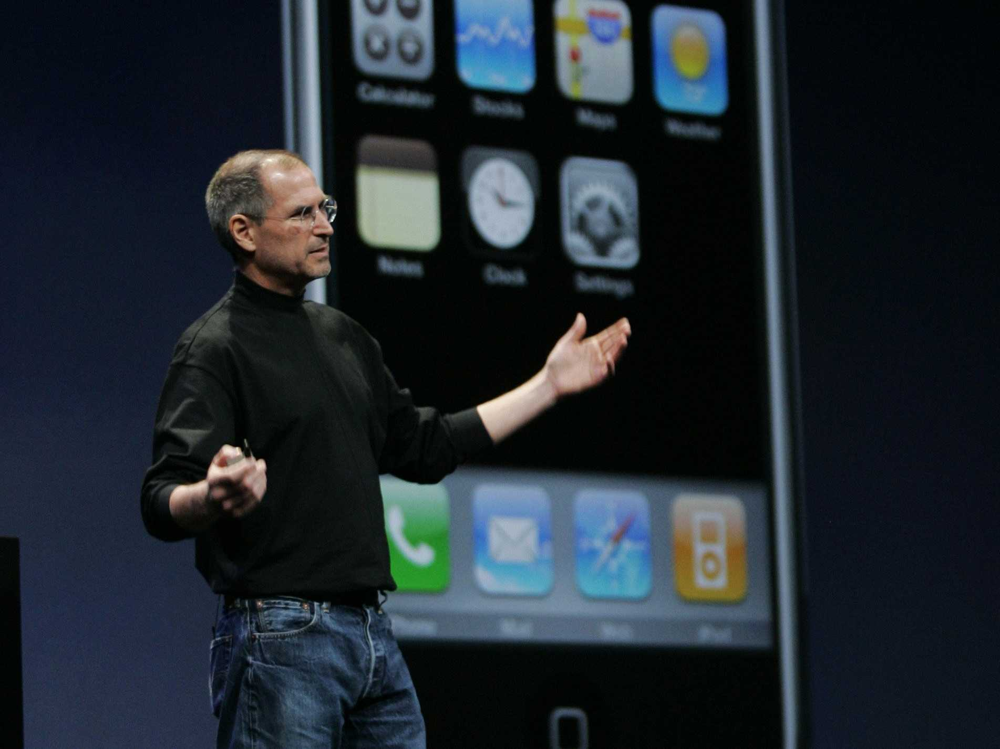

Steve Jobs introduces iPhone and its revolutionary touch-screen interface
A glimpse on Steve's life
11 Jan 2005
At Macworld San Francisco, Steve Jobs unveils Apple's productivity suite iWork, the new Mac mini, and the iPod shuffle, the cheapest iPod ever at $49
29 Apr 2005
Mac OS X 10.4 Tiger is released. A stable, fast release, it is immensely popular and marks the end of the four-year transition from the old Mac OS to UNIX-based Mac OS X
6 Jun 2005
At WWDC 2005, Steve Jobs announces that Apple is going to switch away from Motorola's and IBM's PowerPC architectures, and use Intel processors in its future Macs instead. This move will further help the growing adoption of the Mac
12 Jun 2005
Steve Jobs makes a memorable commencement speech at Stanford University. History will remember its closing remarks, Steve's advice to the young students: 'Stay hungry, stay foolish', a quote from the last page of the Whole Earth Catalogue from his youth
7 Sep 2005
Steve introduces the Motorola ROCKR, an iTunes-compatible cell phone, and the iPod nano
12 Oct 2005
Steve Jobs invites Disney's new CEO Bob Iger on stage at an Apple Music Event where he also introduces the new iPod videos and the iTunes movie store
10 Jan 2006
Steve Jobs unveils the first two Intel Macs at Macworld, the iMac and the new MacBook Pro
24 Jan 2006
The Walt Disney Company acquires Pixar for $7.4 billion. Pixar's largest shareholder Steve Jobs joins the Disney board while Ed Catmull becomes president of the Walt Disney Animation Studios, and John Lasseter its chief creative officer
28 Feb 2006
Apple releases its first living-room product, the iPod hi-fi, discontinued a year and a half later
Mid 2006
Apple starts its famous 'Mac vs PC' campaign, a series of TV commercials featuring Justin Long as Mac and John Hodgman as PC. The campaign will last for three years and mark popular culture
9 Jan 2007
In his most memorable keynote presentation ever, at Macworld 2007, Steve Jobs introduces iPhone and its revolutionary touch-screen interface. He also introduces Apple TV and announces the company's name change from Apple Computer Inc. to Apple Inc. to better reflect its new nature
15 Jan 2008
At Macworld 2008, Steve Jobs introduces MacBook Air, with the tagline 'the world's thinnest notebook'. Three years later, it will come to redefine all of Apple's notebook product line
9 Sep 2009
Back at Apple, Steve Jobs makes the first public appearance after his transplant to introduce new iPods at the 'It's Only Rock'N'Roll' event
27 Jan 2010
After months of wild rumors, Steve Jobs unveils iPad, 'the biggest thing Apple's ever done'. The tablet runs the same operating system as iPhone
16 July 2010
One month after the release of the new iPhone 4, Steve Jobs holds a press conference to address the smartphone's supposed reception issues, the so-called 'Antennagate'
24 Aug 2011
Steve Jobs resigns as CEO of Apple, with the words 'I have always said if there ever came a day when I could no longer meet my duties and expectations as Apple's CEO, I would be the first to let you know. Unfortunately, that day has come.' Tim Cook becomes Apple CEO
5 Oct 2011
Steve Jobs dies at home, surrounded by his family
24 Oct 2011
After two years of work, and forty interviews with Steve Jobs, Walter Isaacson publishes his authorized biography of the Apple and Pixar co-founder, simply named Steve Jobs
Design is not just what it looks like and feels like. Design is how it works.